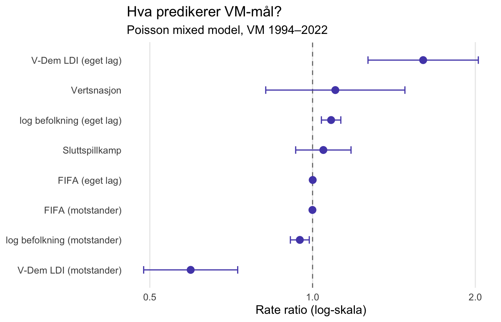
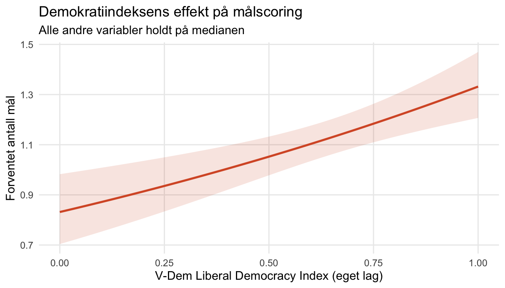

Fotball er enkel sport: det handler om å score mål. Men bak hvert mål ligger tiår med investering, talentutvikling og organisering. Er det noen sammenheng mellom landets politiske system og hvor mange mål laget scorer i VM? Det er spørsmålet vi ser på her — ikke fordi vi forventer et dramatisk svar, men fordi veien til svaret tvinger oss til å ta stilling til noen interessante metodiske valg.
Data og design
Vi bruker kampdata fra åtte VM-sluttspill, fra USA 1994 til Qatar 2022 — totalt 626 kamper og 1252 lags-observasjoner i analysen. Målscoren er registrert etter 90 (eventuelt 120) minutter; straffekonkurranser er ekskludert.
Tre kovariater knyttes til hvert lag, hentet fra tre separate kilder:
- FIFA-ranglistepoengsummen like før turneringen starter (fra Kaggle-datasett med historiske ranglister)
- Befolkningsstørrelse (log-transformert, fra Verdensbanken via
WDI) - V-Dem Liberal Democracy Index — et komposittmål for liberalt demokrati som strekker seg fra 0 (minst demokratisk) til 1 (mest demokratisk), fra Varieties of Democracy-prosjektet
I tillegg kontrollerer vi for om laget spilte hjemme som vertsnasjon og om kampen var en sluttspillkamp (fremfor gruppespillskamp).
Utfallet modelleres som en tellevariabel (antall mål scored av ett lag i én kamp), noe som gjør Poisson-regresjon til et naturlig valg.
Hvorfor tilfeldig effekt?
Her er problemet vi må løse: de to halvdelene av én og samme kamp er ikke uavhengige observasjoner.
Tenk på en kamp mellom to offensive lag på en dag med dårlig forsvar, dårlig vær, eller en dommer som liker å la spillet gå. Begge lag ender opp med mange mål — ikke fordi de isolert sett er bedre enn modellen tilsier, men fordi akkurat denne kampen var målrik. Et lavmålskamp har den motsatte dynamikken: begge lag scorer lite, fordi det er noe ved denne spesifikke konteksten som hemmer mål.
Resultatet er en positiv korrelasjon mellom de to lagenes målscorer innenfor en kamp. Ignorerer vi dette, underestimerer vi usikkerheten i estimatene — vi tror vi vet mer enn vi gjør.
Løsningen er en tilfeldig effekt (random intercept) per kamp:
\[ \log(\mu_{ij}) = \beta_0 + \mathbf{x}_{ij}^\top \boldsymbol{\beta} + u_j, \qquad u_j \sim \mathcal{N}(0,\, \sigma^2) \]
Her er \(\mu_{ij}\) det forventede antall mål for lag \(i\) i kamp \(j\), \(\mathbf{x}_{ij}\) er kovariater for det laget, og \(u_j\) er en kampspesifikk “mål-vennlighet” som er lik for begge lag i samme kamp. Positive verdier av \(u_j\) betyr at kampen hadde noe som fremmet mål utover det modellen kan forklare med lagkvalitet; negative verdier betyr det motsatte. Vi estimerer aldri \(u_j\) direkte — vi integrerer dem bort og lar \(\sigma^2\) fortelle oss hvor mye kampspesifikk variasjon det er.
Dette er en enklere variant av et bivariate Poisson-design (der man modellerer de to lagenes mål som korrelerte tilvekster), men fanger det vesentligste: at kamp-konteksten skaper avhengighet mellom observasjonene.
Modellresultater
Vi estimerer to modellvarianter. Den begrensede modellen bruker differansen mellom laget og motstanderen for hver kovariat (dvs. \(\text{FIFA}_{lag} - \text{FIFA}_{motstander}\)), noe som tvinger frem en symmetriantagelse: en enhet FIFA-poeng opp hos ditt lag gir nøyaktig samme effekt som én enhet ned hos motstanderen. Den fulle modellen lar de to sidene ha egne koeffisienter.
| Variabel | Rate ratio | 95 % KI (nedre) | 95 % KI (øvre) | p-verdi |
|---|---|---|---|---|
| FIFA (eget lag) | 1.001 | 1.000 | 1.001 | < 0.001 |
| FIFA (motstander) | 0.999 | 0.999 | 1.000 | < 0.001 |
| log befolkning (eget lag) | 1.082 | 1.038 | 1.128 | < 0.001 |
| log befolkning (motstander) | 0.947 | 0.910 | 0.986 | 0.008 |
| V-Dem LDI (eget lag) | 1.601 | 1.266 | 2.026 | < 0.001 |
| V-Dem LDI (motstander) | 0.595 | 0.487 | 0.727 | < 0.001 |
| Vertsnasjon | 1.102 | 0.819 | 1.482 | 0.522 |
| Sluttspillkamp | 1.047 | 0.931 | 1.178 | 0.445 |
Som ventet er FIFA-ranglistepoengsummen den klart sterkeste prediktoren. Et lag med høy FIFA-poengsum scorer mer — og møter de et lag med høy FIFA-sum er effekten motsatt. Alt dette er fornuftig: FIFA-ranglisten er designet for å oppsummere akkurat den informasjonen.
Sluttspillkamper produserer litt færre mål. Det er også som forventet: lag spiller mer defensivt når et tap er terminalt.
Vertsnasjon-fordelen er positiv, men usikker.
Demokrativariabelen i fokus
Nå til det vi egentlig ville vite: betyr det noe om laget kommer fra et demokrati?

I Poisson-modellen er koeffisientene på log-skalaen. Den eksponentierte koeffisienten er en rate ratio: den forteller hvor mange ganger forventet antall mål endres når prediktoren øker med én enhet.
For V-Dem LDI betyr dette: én enhets økning i demokratiindeksen (fra 0 til 1, dvs. fra det minst til det mest demokratiske) multipliserer forventet målscoring med den eksponentierte koeffisienten. Siden V-Dem går fra 0 til 1, er dette en fullstendig gjennomgang av skalaen — fra Qatar til Norge.
Rate ratio for V-Dem LDI (eget lag) er 1.601 (95 % KI: 1.266–2.026, p = < 0.001).
Hva betyr dette i praksis? Sammenlign to lag med identisk FIFA-rangering og befolkningsstørrelse, men der det ene laget er et fullt demokrati (V-Dem ≈ 0.85, som Norge eller Sverige) og det andre er et autoritært regime (V-Dem ≈ 0.15, som Saudi-Arabia eller Kina). Ifølge modellen scorer det demokratiske laget omtrent 60 % flere mål enn det autoritære — alt annet likt.
Men “alt annet likt” er det viktige forbeholdet. FIFA-ranglisten fanger allerede mye av den informasjonen som er relevant for kampkvalitet: treningsfasiliteter, forbundskvalitet, spillerbase. Demokrativariabelen spiller en rolle utover det FIFA-ranglisten allerede fanger, men det er et smalere spørsmål enn “er demokratier bedre til fotball?”
Hva kan forklare effekten?
Det er minst tre mekanismer som kan gi en sammenheng mellom demokrati og VM-mål:
- Talentdistribusjon: I mer åpne samfunn er det lettere for barn fra alle bakgrunner å bli oppdaget og utviklet. Autoritære regimer kanaliserer ressurser sentralt, men mister bredden.
- Institusjonell autonomi: Demokratiske fotballforbund opererer gjerne med mer institusjonell uavhengighet fra politisk press. Trenervalgene gjøres av sportsfolk, ikke politikere.
- Spuriøs samvariasjon: Demokrati korrelerer med BNP, humankapital og stabilt styresett — faktorer som alle kan påvirke fotballkvalitet, men som vi ikke fullt ut kontrollerer for.
Modellen kan ikke skille mellom disse forklaringene. Det vi kan si er at effekten, gitt FIFA-poengsum og befolkningsstørrelse, er statistisk signifikant.
Begrensninger
Et par åpenbare forbehold:
Seleksjonsskjevhet: Bare lag som kvalifiserer seg til VM inngår. Svake diktaturer (og svake demokratier) er sjeldnere representert. Vi ser på regimet blant de beste lagene i verden, ikke blant alle lag.
FIFA-ranglisten absorberer mye: Ranglisten er oppdatert like før turneringen og reflekterer allerede lagets form og organisering. Demokrativariabelen konkurrerer om variasjon med en meget presis prediktor.
Effekter over tid: V-Dem-indeksen varierer ikke bare på tvers av land, men også over tid. Saudi-Arabia i 1994 og Saudi-Arabia i 2022 er ulike. Modellen behandler alle år likt.
Oppsummering
| Modell | Poisson mixed model med kampspesifikk random intercept |
| Sample | VM 1994–2022, 626 kamper, 1252 observasjoner |
| Sterkeste prediktor | FIFA-rangliste (som forventet) |
| Demokratieffekt | Rate ratio 1.601 (V-Dem LDI, eget lag) |
| Random intercept | Fanger kampspesifikk mål-vennlighet; håndterer korrelasjon innen kamp |
Den tilfeldig effekten er ikke bare statistisk støy — den er et substansielt grep for å anerkjenne at to halvdeler av en kamp ikke er uavhengige. Og demokrativariabelen? Den sier noe interessant, men neppe noe avgjørende, om hva som gjør et VM-lag godt. Til VM 2026 vil det uansett være FIFA-poengsummen som teller mest.